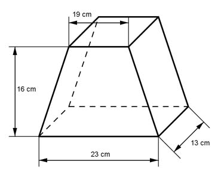

Aufgabe 8 Berechnen Sie das Volumen V des dargestellten Prismas.  Die Grundfläche G ist ein Trapez. V = G * h 23 cm + 19 cm Grundfläche G = ---------------- * 16 cm 2 23 cm + 19 cm V = ----------------- * 16 cm * 13 cm = 4 368 cm³ 2